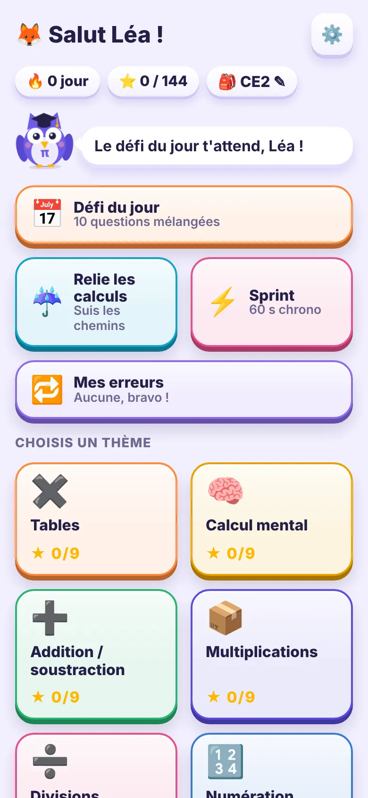
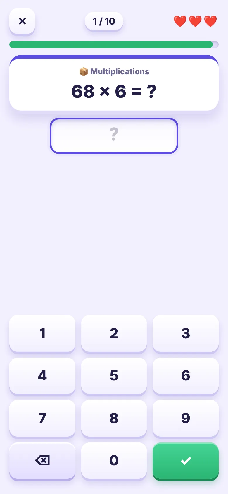

L'application
Une application de mathématiques pour les élèves du CE1 au CM2, entièrement bilingue français–arabe (« رياضيات الأسد », les maths du lion). L'enfant choisit sa classe puis s'entraîne : calcul mental, opérations, tables, fractions, décimaux, géométrie, horloge, problèmes… Trois jeux (le compte est bon, memory de calculs, symétrie) rendent l'entraînement plus ludique. Les parents règlent le chrono, les sons et les récompenses.
Aperçu


Ce que vous y trouverez
- Du CE1 au CM2, interface français / arabe
- Calcul, fractions, décimaux, géométrie, horloge, problèmes…
- Jeux : le compte est bon, memory, symétrie
- Plusieurs profils d'enfants, récompenses choisies par les parents
- Voix française intégrée ; données gardées sur l'appareil
En détail
- Version
- 1.0
- Taille
- 86,7 Mo
- Android
- à partir de 6.0
- Mise à jour
- 8 novembre 2026
Catégorie : Éducation · Gratuit · Sans publicité
Autorisations demandées
- Accéder à Internet
- Faire vibrer le téléphone
Ce qu'il faut savoir
- Les profils d'enfants, les progrès et les réglages restent enregistrés sur l'appareil.
- La voix française est lue par l'application elle-même.
- Seules les autorisations Internet et vibration sont demandées.
Comment installer Math Primaire sur Android ?
- Ouvrez cette page depuis votre téléphone et touchez Télécharger.
- Ouvrez le fichier téléchargé (notification, ou dossier Téléchargements).
- Si Android le demande, autorisez votre navigateur à installer des applications inconnues, puis touchez Installer.
Ces applications ne passent pas par le Play Store : Android ou Play Protect peut afficher un avertissement. Si vous avez téléchargé le fichier depuis cette page, vous pouvez poursuivre l'installation.